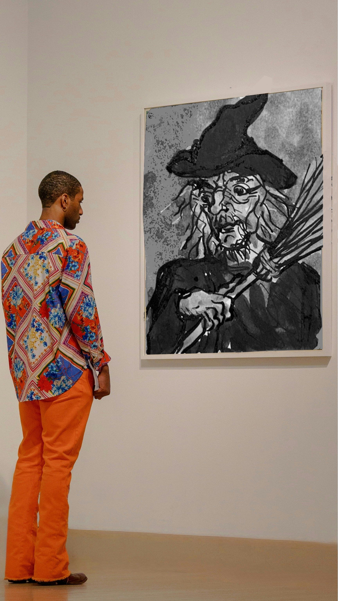
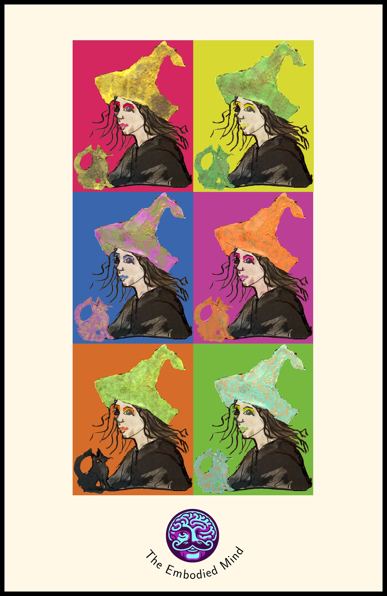

Visual Design and Web Project Assignment 1
This is the main page for the Visual Design and Web Project Assignment 1.
Overview
This project showcases various visual design elements and web development techniques. The tools used are as follows:
- LaTeX with tikz
- Programatic creation of images as PDF
- Inkscape
- Generation of vector graphics and tracing bitmap files
- Krita
- Generation of raster graphics, digital painting and animation
- pdftocairo
- Conversion of PDF files to various image formats, including SVG
- ffmpeg
- Conversion and manipulation of animated files
Image 1 - Embodied Mind Logo
Web optimised file format: SVG
Image 2 - Background for Web Witchcraft and Wizardry Landing Page
Web optimised file format: SVG

Image 3 - Favicon
Web optimised file format: SVG
Image 4 - Picture of Dorian Grayscale (after Oscar Wilde)
Web optimised file format: WEBP and JPG

Image 5 - Shot Morgana (after Andy Warhol)
Web optimised file format: WEBP and JPG

Image 6 - Promotional Montage
Web optimised file format: MP4, WEBP and GIF